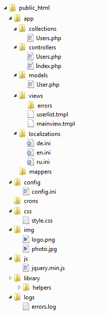

Mantella MVC
MMVC — это фреймворк, каркас на PHP для разработки веб-приложений.
Основываясь на концепции MVC (Model View Controller), исключает шаблонные операции и обеспечивает стандартную архитектуру приложения.
Позволяет легко разделить приложение на модели, виды и контроллеры, улучшает тестирование, делает код легко переносимым, а также помогает новым разработчикам
в проекте быстро и легко вникнуть в процесс разработки.
Процесс установки и настройка фреймворка занимает несколько минут и работа с ним за счет подробного описания классов и их методов проста и эффективна.
Помимо MVC-компонентов MantellaMVC содержит ряд библиотек, полезных для построения приложения:
- работа с базами данных
- встроенная поддержка шаблонов
- облегчение манипуляцией за вводом/выводом потоков данных
- встроенная поддержка авторизации пользователей
- валидация данных
- система локализаций
- определние страниц ошибок
- набор вспомогательных классов
Системные требования
Для корректной работы MMVC необходимо:
PHP 5.1 (или выше)
Поддержка веб-сервером mod_rewrite
Структура приложения

app/ - основная папка проекта. В подкаталогах хранятся модели, контроллеры, коллекции и виды (шаблоны) в соответствии с
моделью MVC. Так же тут находятся вспомогательные классы - мапперы, которые автоматически загружаются при инициализации приложения и
каталог локализаций. Название и рспаложение папки приложения может быть поменяно в конфигурационном файле.
config/ - конфигурационные файлы: настройка приложения, подключений к базам данных и авторизации.
crons/ - хранилище для скриптов, запускаемых по расписанию.
css/ - стили для фронт-енда приложения. При объявлении файла стилей используя шаблонный язык, скрипт ищет файл в этой папке.
При необходимости можно изменить расположение и имя папки стилей, но задавать стиль на странице тогда нужно явно.
img/ - папка для изображений по-умолчанию. Может быть изменено расположение и имя.
js/ - javasсript библиотеки для фронт-енда приложения. При объявлении скрипта используя шаблонный язык, скрипт ищет файл в этой папке.
При необходимости можно изменить расположение и имя папки javascript-скриптов, но задавать путь к файлам на странице тогда нужно явно.
library/ - базовые классы Mantella MVC. В каталоге helpers находятся всмопогательные классы, которые нужно подключать явно или через
конфигурационный файл с секции []includes]
logs/ - папки для файлов-логов по-умолчанию. Путь к файлу логов может быть изменен в конфигурационных файлах.
Настройка
Конфигурационный файл располагается в директории <root>/config/ по умолчанию либо в любом другом месте, указанном в
директиве inludes_path.
Секция [globals]
Общие настройки приложения.
APP_PATH - путь к директории приложения, по умолчанию 'app/'
SITE_NAME - название сайта
M_ADMIN_EMAIL - е-майл адрес администратора сайта, будет показан на странице броузера при возникновении ошибки
ERROR_DISPLAY - вывод текста ошибки в броузер
PHP_ERROR_LOG - перенаправление php ошибок как лог-файл.
ERROR_LOG_PATH - путь к файлу логов, по умолчанию 'logs/errors.log'). Убедитесь что лог-файл имеет права на запись. Удаление или комментирование
данный строки выключает логгирование.
BASE_URL - адрес приложения. Если опция закомментирована, то составление этого адреса выполняется автоматически.
URL_PREFIX - расширяет стандартную маршрутизацию на http://domen/url_prefix/controller/action. В значении указывается true, если нужно учитывать
переменную префикса при маршрутизации, и false - иначе.
Секция [definitions]
Определение глобальных переменных, доступных в любом месте приложения.
Секция [includes]
Подключение вспомогательных классов и библиотек
Секция [databases]
Настройка подключений к базам данных. Количество подключений не ограничено.
Формат: имя_подключения.аттрибут
Аттрибуты:
driver - тип базы данных, возможны варианты: mysql / mssql / postgres / oracle
host - адрс хоста или схема для подключения oracle
port - порт соединения. Ели не указан, оспользуется стандартный для выбранной БД
database - название базы
username - логин для подключения
password - пароль для подключения
charset - кодировка получения данных клиентов и БД, если не указано, действуют настройки БД
Секция [definitions]
Настройка авторизации в БД для использования класса AUTH.
Параметры:
connection - название соединения из секции databases
table - таблица пользователей
login - поле логина. Если используется два поля, они разделяются знаком @, например: "login@email"
password - поле пароля
encoding - кодировка хранимого пароля, возможны варианты: md5 / sha1
fields - перечень полей, для объекта AUTH, запрашиваемых из БД
Пример конфигурации:
[globals]
ERROR_DISPLAY = "On"
ERROR_LOG_PATH = "logs/errors.log"
PHP_LOG_PATH = "logs/php_error.log"
APP_PATH = "app/"
SITE_NAME = "Mantella MVC Application"
ADMIN_EMAIL = "info@domen.com"
;BASE_URL = "http://domen.com/my_app/"
URL_PREFIX = false
[definitions]
SERVICE_NAME = "MMVC APP"
VARIABLE = "Hello world"
[includes]
geo_helper = "library/helpers/GeoHelper.php"
mail_library = "library/helpers/phpmailer/class.phpmailer.php"
mail_wrapper = "library/helpers/Mailer.php"
[databases]
db1.driver = "mysql"
db1.host = "localhost"
db1.port = "3306"
db1.database = "database"
db1.username = "user"
db1.password = "password"
db1.charset = "utf8"
db2.driver = "postgres"
db2.host = "localhost"
;db2.port = ""
db2.database = "pg_database"
db2.username = "pg_user"
db2.password = "password"
db2.charset = "utf8"
[authorization]
connection = "db1"
table = "users_table"
login = "username"
password = "password"
encoding = ""
fields = "id, username, fullname, email"
Контроллеры
Контроллер - это класс, описывающий вызываемый объект и действие над этим объектом посредством написания методов класса.
Классы-контроллеры распологаются в папке app/controllers/ , при этом имя файла должно соответствовать названию контроллера (с большой буквы),
а название класса носить такое же имя, дополненное словом Controller.
Контроллеры должны наследоваться от класса MantellaController.
Контроллером по-умолчанию является класс с именем IndexController описанный в, соответственно, файле controllers/Index.php
Если файла контроллера расплагаеся в подпапках, название класса должно состоять из пути к файлу, используя знак подчеркивания в качестве разделителя, например:
Файл класса находится в: app/contollers/users/Administrator.php
Название класса: class Users_AdministratorController { }
Обработчик маршрутизации считает за методы действия все метода контроллера, которые начинаются с do. Если действие не
передано в контроллер, по-умолчанию будет вызываться метод do_(). В любой метод-действие передаётся объект MantellaRequest
для облегчения работы с входными и выходными данными.
Если в классе контроллера определён метод public init( REQUEST $request ), он вызывается перед вызовом метода-действия в
соответствии с правила маршрутизации. В метод передаётся передаётся объект Request c установленным названием действия, которое будет
вызвано в контроллере впоследствии.
В классе контроллера можно опрежедить универсальный метод-действия public gag( REQUEST request ), он вызывается только в том случае,
если не найден необходимый метод действия. В метод передаётся передаётся объект Request и с названием действия.
Название действия может состоять из цифр, букв латинского алфавита и тире. В названии метода тире приводится к знаку подчеркивания, например:
Адрес: domen.com/user/get-operators
Название класса: class UserController { }
Название метода действия: public function doGet_Operators( $REQUEST ) { }
Методы
Model getModel( string name )
возвращается объект модели по имени name
Collection getCollection( string name )
возвращается объект коллекции по имени name
Controller getController( string name )
возвращается объект контроллера по имени name
Примеры
Определение контроллера (app/controllers/Users.php)
class UsersController extends MantellaController {
// --- Предварительная обработка действия
// --- Если в контроллер попал некорректный запрос, прерываем выполнение и отвечаем ошибкой
public function init( $REQ ) {
if ( !$REQ->isAjax() ) {
$REQ->reply('Invalid http request');
}
}
// --- Метод по-умолчанию, вызывается при запросе http://domen/users/
// --- Получает список пользователь из БД и возвращает его в формате JSON
public function do_( $REQ ) {
$users = $this->getCollection('Users');
$users->dbLoad();
$REQ->sendJson( $users->getAll() )
}
// --- Вызов добавления пользователя: http://domen/users/add?fullname=John&age=20¬e=any_text
public function doAdd( $REQ ) {
$user = $this->getModel('User');
$user->set('fullname', $REQ->getVar('fullname'))
->set('age', $REQ->getVar('age'))
->set('note', $REQ->getVar('note',"", true))
->add();
$REQ->reply("User ID#".$user->get('id')." created");
}
}
Модели
Модель - это единичный набор структурированных данных, по аналогии с одной строкой таблицы в базе данных.
Классы моделей располагаются в папке app/models/ , при этом имя файл должно соответствовать названию модели (с большой буквы) и
название класса соответствует названию модели, дополненное словом Model.
Модели должны наследоваться от класса MantellaModel.
Аттрибуты
DATABASE
определение идентификатора базы данных (см. конфигурацию БД) - источника данных
TABLE
таблица в БД - источник данных
PRIMARY_KEY
название поля уникального идентификатора данных модели
FIELDS
определение полей модели (ассоц. массив), фактически поля в БД
Типы данных:
int - integer, целое число
num - float, дробное число
str - string, строковая переменная. Для задания пустой строки, зарезервировано строкое значение "NULL"
bool - boolean, значения true/false
date - date, дата/время. Для задания текущей даты зарезервировано строкое значение "NOW"
fake - мнимое поле, не участвует в запросах к БД
RELATED
связка текущей модели для другими моделями для получения расширенного набора данных (см. пример), где
bind - связующее поле (ключ) в текущей модели
model - связная модель
match - связующее поле (ключ) в связной коллекции
value - выбираемое поле из связной коллекции
VALIDATORS
определение правил проверки для полей модели, см. раздел "Валидация данных"
Методы
mixed setField( mixed value )
Описывается внутри класса модели.
Кастомный сеттер - функция для преобразования хранимого значения в поле данных модели. В функцию передаётся значение для данного поля данных
mixed getField( mixed value )
Описывается внутри класса модели.
Кастомный геттер - функция для получения преобразованного значения поля данных из модели, при этом в модели остаётся неформатированное значение. В функцию передаётся
значение для данного поля данных
Model set( string property , mixed value , boolean applyCustomSetter = true )
Сеттер - устанавливает полю данных модели property значение value. При наличие сеттера для данного поля, он будет
вызван при присовении значения, но если applyCustonSetter принимает значение false, функция-сеттер не будет вызвана.
Возвращает объект экземпляра модели
mixed get( string property , boolean applyCustomGetter = true )
Геттер - возвращает значение поля данных модели property или NULL, если поле с таким именем в модели не существует. При
наличие геттера для данного поля, он будет вызван, но если applyCustonGetter принимает значение false, функция-геттер не будет вызвана.
Model fill( array values )
заполняет модель данными из values, где values - accoциативный массив. Возвращает объект экземпляра модели
array row( boolean applyCustomGetter = true )
возвращает все поля данных модели в виде ассоц. массива. При наличие геттера для текущего поля, он будет вызван, но если
applyCustonGetter принимает значение false, функция-геттер не будет вызвана.
Model clear( boolean exceptPrimaryKey = false )
очищает набор данных и возвращает экземпляр модели. Если аргумент exceprtPrimaryKey истино, то поле, объявленное как уникальный ключ модели, не очищается
string getPrimaryKeyName( )
возвращает в виде строки название поля - уникального идентификатора набора данных модели
mixed getPrimaryKeyValue( )
возвращает значение поля - уникального идентификатора набора данных модели
Model setPrimaryKey( mixed value )
устанавливает значение value полю - уникальному идентификатору набора данных модели. Возвращает экземпляр модели
array getFields( )
возвращает описание полей денных модели в виде ассоц. массива
boolean isFieldExists( string name )
проверяет существует ли поле данных с именем name в модели
mixed getFieldType( string name )
возвращает тип поля по имени name или false, если поле не найдено проверяет
boolean fetch( mixed primary_key_value )
загружает из БД апись в модель по ключу primary_key_value
boolean add( boolean reFillModel=true )
добавляет запись в БД и заполняет модель новыми данных, если reFillModel истино
boolean save( string condition=null , boolean reFillModel=true )
модифицирует запись в таблице БД и заполняет модель новыми данных, если reFillModel истино. Может иметь дополнительные условия condition для UPDATE sql-запроса.
Если в модели значение primary key нет значения, происходит добавление записи в таблицу БД.
boolean remove( string condition=null )
возвращает экземпляр класса соединения с БД. Может иметь дополнительные условия condition для DELETE sql-запроса.
boolean validate( )
выполняет проверку данных модели на основании правил, заданных в VALIDATORS. Если все проверки пройдены удачно, возвращает TRUE, иначе FALSE
Подробнее смотреть раздел "Валидация Данных"
array getUnvalidated( )
возвращает массив не прошедших проверку полей модели в формате:
name - название поля
value - значение поля
rule - правило (в случае если в у поля несколько правил, каждое правило создаёт свою запись в массиве)
error - текст ошибки
В случае если проверка была удачна, вызов функции getUnvalidated вернёт пустой массив.
Подробнее смотреть раздел "Валидация Данных"
string getTableName( )
возвращает название таблицы
string getDatabaseName( string name )
возвращает строковый идентификатор соединения с БД
MantellaDB getDatabase( string name )
возвращает экземпляр класса соединения с БД
string getLastError( )
возвращает последнюю ошибку или null, если ошибки не было.
Примеры
Определение модели (app/models/Man.php)
class ManModel extends MantellaModel {
// --- определение уникального поля для структуры данных в модели ---
$PRIMARY_KEY = 'id';
// --- определение полей данных модели ---
$FIELDS = array(
'id' => "int",
'name' => "str",
'weight' => "num",
'height' => "num",
'birth' => "date",
'city_id' => "int", // связующее поле модели City(id, name, area, ..)
'city_name' => "str" // поле связной модели
'city_area' => "num" // поле связной модели
);
// --- привязка к таблице в БД ---
protected $DATABASE = "db_connection";
protected $TABLE = "db_table";
// --- связка с моделью Город ---
protected $RELATED = array(
'city_name' => array( 'bind'=>city_id, 'model'=>"City", 'match'=>"id", 'value'=>"name"),
'city_area' => array( 'bind'=>city_id, 'model'=>"City", 'match'=>"id", 'value'=>"area"),
);
// --- установка проверок необходимых полей ---
protected $VALIDATORS = array(
'name' => "required",
'weight' => "min:10|max:200",
'height' => "min:50"
);
// --- при наполнении модели данными, значение веса будет переведено в граммы из килограммов, в модели вес будет храниться в граммах ---
function setWeight( $value ) {
return $value*1000;
}
// --- при получении веса, значение переводиться в килограммы и добавляется единица измерения, при этом в модели вес по-прежнему храниться граммах ---
function getWeight( $value ) {
return $value/1000." Kg";
}
}
Коллекции
Коллекция - это набор моделей, по аналогии в таблицей в базе данных.
Классы коллекций располагаются в app/collections/ , при этом имя файл должно соответствовать названию коллекции (с большой буквы) и
название класса соответствует названию коллекции, дополненное словом Collection.
Коллекции должны наследоваться от класса MantellaCollection.
Аттрибуты
MODEL
привязка модели к коллекции
Методы
integer length( )
возвращает количество элементов (моделей) в коллекции
array getAll( )
возвращает все модели коллекции а виде массива
Model getByIndex( integer index )
возвращает экземпляр модели по индексу index из коллекции или FALSE если индекса не существует
mixed getIdByIndex( integer index )
возвращает значение ключевого поля модели по индексу index в коллекции, или NULL если индекса не существует
integer getIndexById( mixed id )
возвращает индекс модели в коллекции, найденной по ключу id, или FALSE если модель не найдена
Model getById( mixed id )
возвращает экземпляр модели, найденной по ключу id в коллекции или FALSE если модели не найдено
mixed getValueByIndex( integer index, string field )
возвращает значение поля модели field, найденной в коллекции по индексу index или NULL если модель или поле не найдено
mixed getValueById( mixed id, string field )
возвращает значение поля модели field, найденной в коллекции по ключу id или NULL если модель или поле не найдено
Collection reset( )
устанавливает указатель н начало коллекции, возвращает объект коллекции
Model next( )
возвращает следующую модель из коллекции, смещает указатель по коллекции. Если последующая модель не найдена, возвращает FALSE
Model first( )
возвращает первую модель из коллекции, смещает указатель по коллекции. Если коллекция пуста, возвращает FALSE
Model last( )
возвращает последнюю модель из коллекции. Если коллекция пуста, возвращает FALSE
Collection sort( string field, string direction )
сортирует элементы коллекции по полю модели field и по направлению direction (ASC/DESC)
Collection add( Model model )
добавляет модель в коллекцию (без действий над БД)
Collection replace( Model model, mixed index=null )
заменяет найденную модель в коллекции на модель model. Если указан index то модель по индексу, если индекс не указан, то
ищет модель по primary_key и заменяет её (без действий над БД)
Collection remove( Model model )
удаляет модель model из коллекции (без действий над БД)
Collection clear( )
очищает коллекцию моделей (без действий над БД)
Collection dbLoad( string condition=null, string order=null, integer limit=null )
загружает данные из БД в коллекцию с заданным дополнительным условием condition для запроса, сортируя
по полю order с ограничение по количеству записей order
integer dbSumm( string fields , string condition=null)
возвращает сумму по полю field и заданныму дополнительныму условию condition из БД
integer dbCount( string condition=null)
возвращает количество строк по заданныму дополнительныму условию condition из БД
integer dbMax( string fields , string condition=null)
возвращает максимальное значение поля field и заданныму дополнительныму условию condition из БД
integer dbMin( string fields , string condition=null)
возвращает минимальное значение поля field и заданныму дополнительныму условию condition из БД
integer dbAverage( string fields , string condition=null)
возвращает среднее значение поля field и заданныму дополнительныму условию condition из БД
Collection dbUpdate( )
обновляет данные в БД всех моделей из коллекции, перезагружает модели в коллекцию. Возвращает экземпляр коллекции.
Collection dbRemove( string condition=null)
удаляет данные из БД по заданныму дополнительныму условию condition. Если условие не задано, но очиститься вся таблица в БД.
Метод не удаляет элементы из коллекцию.
boolean dbClear( )
удаляет все модели из коллекции и из БД
string getModelName( )
возвращает название модели данных в коллекции
Model getModel( )
возвращает экземпляр модели (без данных) из коллекции
string getTableName( )
возвращает название таблицы БД, определенной для моделей в коллекции
string getDatabaseName()
возвращает строковое название подключения к БД, определенный для моделей в коллекции
MantellaDB getDatabase()
возвращает экземпляр класса-подключения к БД, определенный для моделей в коллекции
Примеры
Определение коллекции моделей (app/collections/Cities.php)
class CitiesCollection extends MantellaCollection {
// --- привязка модели к коллекции ---
protected $MODEL = "City";
}
Использование коллекции в контроллере (app/controllers/Index.php)
class IndexController extends MantellaСontroller {
public function doList( $request ) {
// --- загружаем и показываем первые 10 городов, принадлежащие пользователю, сортированные по названию ---
$cities = $this->getCollection('Cities')->dbLoad( 'user_id='.AUTH::get('id') , 'name' , 10 );
while( $city = $cities->next() ) {
echo "<pre>".print_r( $city->row(), true )."</pre>";
}
}
public function doMaximum( $request ) {
// --- получаем площадь самого большого города, принадлежащего текущему пользователю ---
$maxArea = $this->getCollection('Cities')->dbMax( 'area' , 'user_id='.AUTH::get('id') );
}
}
Отображения
Отображение - вспомогательный статический MantellaView класс для выбора, наполнения и отображения шаблона
Шаблоны распологаются в app/views/ и имеют расширение *.tmpl
Синоним для класса: VIEW
Методы
template( string template )
определение шаблона для отображения
boolean is_template_attached( )
был ли определён ранее шаблон ранее в объекте VIEW
set( mixed names, mixed values )
устанавливает значение переменной в шаблоне
В качестве первого аргумента names может быть строковая переменная - имя переменной в шаблоне,
values - значение переменной, либо names может быть ассоциативным массивом переменных для
передачи в шаблон больше одного значения одним вызовом функции.
show( boolean terminate=false )
формирует html по шаблону и отправляет результат броузеру клиента. Если terminate истино, но работа скрипта прерывается.
string render( )
формирует html по шаблону и возвращает результат в виде строки.
Примеры
Метод контроллера для отображения списка
...
public function doList( $REQ ) {
// --- получение экземпляра коллекции Team ---
$team = $this->getCollection( 'Team' );
// --- загрузка данных в коллекцию из БД ---
$team->dbLoad( null );
// --- назначение отображению шаблона viewteam ---
MantellaView::template("viewteam");
// --- передача переменной в шаблон ---
VIEW::set("count", $team->length() );
// --- передача списка игроков команды, сортированных по имени ---
VIEW::set("team", $team->sort("name", "asc")->getAll() );
// --- отправка страницы броузеру ---
VIEW::show();
}
...
Шаблон отображения списка
<html>
{META charset=utf-8}
{STYLES "main, icons"}
{HEAD "Team"}
<body>
<table>
<tr>
<th> # </th>
<th> Id </th>
<th> Name </th>
</tr>
{LOOP team}
<tr>
<td> {PHP} echo ($_teamINDEX_+1); {PHPEND} </td>
<td> !team.id! </td>
<td> !team.name! </td>
</tr>
{ENDLOOP}
<tr>
<td colspan="3" align="right">{IF !count!>0} found !count! records {ELSE} records not found {ENDIF} </td>
</tr>
</table>
</body>
</html>
Язык шаблонной разметки
Включение
Опция для включения жругих шаблонов в текущий. Если во включаемых шаблонах имеются свои включения, то они тоже задействуются
Пример включения шаблона из файла views/second.tmpl
{INCLUDE second}
Meta-данные
Сокращенная записи генерации мета-данных
Пример
{META charset=utf-8}
{META author=John}
Заголовок
Вставка названия сайта в html-страницу
Общий заголовок из перемой названия сайта в конфиг-файле
{HEAD}
Вставка собственного заголовка
{HEAD "My super site"}
Подключение файлов
Сокращённая запись включения внешних файл стилей CSS и javascript скриптов JS
Подключение нескольких файлов css
{STYLES "mainstyle, icons"}
Подключение нескольких файлов js
{SCRIPTS "jquery, plugin/popup.js"}
Вставка переменных
для отображения переданных в шаблон переменных
Передача в шаблон
...
MantellaView::set('name', "John");
MantellaView::set('food', "apple pie");
MantellaView::set('drink', "tea");
...
Отображение
!name! eats !food! and drinks !drink!
PHP
При необходимости можно вставить блоки кода на чистом PHP
Пример
{PHP}
$a = 6;
$b = 8;
echo "Sum of $a and $b is ".($a+$b);
{PHPEND}
Условия
предназначение для отображения различной информации в зависимости от условия
Передача в шаблон
...
MantellaView::set('count', 5);
...
Отображение
{IF !count!>0} Found !count! items {ELSE} Items not found {ENDIF}
Циклы
опция цикла позволяет отображать массивы данных и списки
Передача в шаблон
...
$data = array();
$data[0] = array( 'name'=>"John", 'auto'=>"Mercedes", 'experience'=>8 );
$data[1] = array( 'name'=>"Peter", 'auto'=>"BMW", 'experience'=>4 );
$data[2] = array( 'name'=>"Jessica", 'auto'=>"Honda", 'experience'=>2 );
MantellaView::set('drivers', $data);
...
Отображение
{LOOP drivers}
{PHP} echo ($_driversINDEX_+1); {PHPEND}. Driver !drivers.name! drives !drivers.auto! already !drivers.experience! years. <br>
{ENDLOOP}
внутри цикла на уровне PHP доступна переменная _<название_переменной_массива>INDEX_ , содержащая порядкой номер прохода по циклу.
Пример сгенерирует следующий текст:
1. Driver John drives Mercedes already 8 years.
2. Driver Peter drives BMW already 4 years.
3. Driver Jessica drives Honda already 2 years.
Объект Request
Request - класс, для облегчения работы с входным/выходным потоками данными. Экземпляр класса передаётся в методы-действия контроллера.
Методы
mixed getVars( string varname, mixed defaultValue, boolean canValueNull)
возвращает GET или POST переменную по её имени varname.
Если переменной с указанным именем не найдено и она не может быть пустой canValueNull = false, возвращается значение defaultValue, иначе возвращается NULL.
mixed getVar( string varname, mixed defaultValue, boolean canValueNull)
возвращает GET или POST переменную по её имени varname.
Если переменной с указанным именем не найдено и она не может быть пустой canValueNull = false, возвращается значение defaultValue, иначе возвращается NULL.
string getVarType( string varname )
возвращает метод получения переменной: GET / POST по имени varname, если переменной в таким именем не существует возвращается UNKNOWN.
mixed getPost( string varname, mixed defaultValue, boolean canValueNull)
возвращает POST переменную по её имени varname.
Если переменной с указанным именем не найдено и она не может быть пустой canValueNull = false, возвращается значение defaultValue, иначе возвращается NULL.
mixed getGET( string varname, mixed defaultValue, boolean canValueNull)
возвращает GET переменную по её имени varname.
Если переменной с указанным именем не найдено и она не может быть пустой canValueNull = false, возвращается значение defaultValue, иначе возвращается NULL.
string getPrefix( )
возвращает значение префиксной переменной, если она была разрешена в конфигурации.
string getAction( )
возвращает название текущего метода-действия в контроллере.
boolean isAjax( )
если на сервер был Ajax-запрос, возвращает TRUE, иначе FALSE.
reply( string text )
отправляет в броузер порцию строковых данных text.
boolean replyJson( mixed data, string success_description )
отправляет клиенту JSON-структуру с данным:
{ success:true, message:'success_description', data: data }
В качестве данных data могут быть как простые типы данных, так и массивы
replyJsonError( string error_description )
отправляет клиенту JSON-структуру с ошибкой:
{ success:false, message:'error_description' }
download( string filepath , [string filename] )
отправляет в броузер клиенту файл по пути filepath (путь указывается от корневого каталога проекта) для скачивания. Параметр filename задаёт имя файлу, если этот параметр на задан, имя файла берется оригинальное.
redirect( string url )
осуществляет перенаправление на указанный в url интернет-адрес.
error( int cause , string message )
генерирует http-ошибку с кодом cause и дополнительным сообщением message.
dump( mixed object )
функция для отладки: отправляет в броузер дамп объекта object.
Пример
...
$id = $REQ->get('id',false,false);
if ($id && $REQ->isAjax()) {
$return = "Incoming Ajax variable ID=".$id;
$REQ->replyJson($return);
}
else {
$REQ->replyJsonError('Unknown ID');
}
...
Объект Database
Есть возможность обратиться к описанной в конфигурации базе данных напрямую, без привлечения коллекций.
Ддя этого в методе контроллере достаточно получить объект MantellaDB из менеджера соединений DBM:
$db = DBM::get('database');
, где в функцию get передаётся идентификатор базы данных в конфигурационном файле. Функция возвращает указатель на
объект соединения с базой данных, либо FALSE с случае ошибки подключения или неверного идентификатора.
Методы
boolean isConnected( )
если c базой данных есть соединение, возвращает TRUE, иначе FALSE
mixed safe( mixed value )
возвращается экранированное значение для конкретной базы данных, которое можно вставить в sql запрос. При обновлении или добавлении
записей в БД через коллекцию или через вызов процедуры/функции значения автоматически экранируются.
mixed execSQL( string sql )
выполняет запрос sql, в случае неудачи возвращает FALSE, если запрос выполнен, то в зависимости от типа запроса возвращает:
SELECT/SHOW: если из базы данных выбрана пустая выборка - TRUE, если не пустая - array,
INSERT/UPDATE/DELETE/ALTER: всегда TRUE
mixed execProcedure( string name, array() parameters )
mixed execFunction( string name, array() parameters )
array getLastError( )
возвращает ошибку последнего действия в виде ассоц. массива: array[code] - код ошибки, array['text'] - описание ошибки
Пример
Работа с MantellaDB напрямую
public function doGetUser( $REQ ) {
$user_id = $REQ->getVar('id', 0, false);
$db = DBM::get('my_db');
$result = $db->execSql("select * from users where user_id=".$user_id);
if (is_array($result)) {
$REQ->replyJson( $result[0] );
}
else {
if($result === false) {
$error = $db->getError();
$REQ->replyJsonError("Error #".$error['code'].": " . $error['text']);
}
else { $REQ->replyJsonError('User not found!'); }
}
}
Сессии/Авторизация
Сессия - это вспомогательный статический класс, облегчающий работы по авторизации пользователей на сайте
Чтобы задействовать встроенную авторизацию, необходимо чтбы в конфигурационных файла была подключены классы MantellaDBManager и MantellaSession.
Синоним вызова: AUTH
Методы
init( string link_table, string fieds, string auth_pair)
инициализация объекта. При инициализации читается опции секции [authorization]. В случае, если в функцию передаются параметры, они замещают собой
настоечную строку из конфигурации.
Если в функцию нет необходимости передавать параметры, отличные от настроек, можно не инициализировать объект - он сам инициализируется при вызове
функций login, get и set.
set( string property , mixed value )
устанавливает полю сессии property значение value.
mixed get( string property )
возвращает значение поля сессии property или NULL, если поля с таким именем не существует
boolean login( string username, string password )
авторизирует пользователя, заполняет структуру сессии данными
array logged( )
возвращает в виде ассоцю массива данные из сессии, либо NULL если авторизации не происходило
logout( )
стирает все данные авторизации, очищает сессию
string error( )
возвращает ошибку на последнее действие или NULL, если операция была успешной.
При этом ошибка очищается из объекта
Примеры
Метод контроллера для авторизации пользователя
...
public function doLogin( $REQ ) {
// --- входные данные ---
$username = $REQ->getVar('user');
$password = $REQ->getVar('password');
// --- попытка авторизации ---
if ( AUTH::login( "user", "secret_phrase" ) ) { // --- Удачно
$REQ->reply("Welcome " . AUTH::get('fullname') . "!");
}
else {
// --- Неудачно
$REQ->reply("Authorization failed! Error: " . AUTH::error() );
}
}
...
Исключения
Для корректного отображения страницы ошибки и записи логов, следует иницировать исключение следующим образом:
throw new MantellaException( string message , integer code ); , где
message - пользователькое сообщение об ошибке
code - код ошибки (соответcвует http кодам ошибок)
При использовании шаблонных отображений ошибок, в шаблон автоматически передаётся массив error со следующими полями:
refnum - уникальный идентификатор ошибки
code - код ошибки
date - дата в формате d.m.Y
time - время в формате H:i:s
addr - IP пользователя
url - строка запроса к серверу
descr - пользовательский текст ошибки
cause - текст ошибки
admin - контактный e-mail из конфигурации
Примеры
Инициализация исключения в контроллере
...
public function doUser( $request ) {
if ( !AUTH::logged() ) {
throw new MantellaException("Unknown user - access denied" , 403);
}
}
...
Шаблон для вывода ошибки (app/views/errors/CODE.tmpl)
<div style="margin: 50 auto; padding:20px; width:40%; border:1px solid #C0C0C0; font-size:12px;">
Reference number: !error.refnum! <br>
Error code: !error.code! <br>
Timestamp: !error.date! !error.time! <br>
IP Address: !error.addr! <br>
URL: !error.url! <br>
HTTP cause: !error.cause! <br>
Admin e-mail: !error.admin!
</div>
Валидация данных
Валидатор - вспомогательный статический класс для проверки данных по определённым правилам.
На основании этого класса встроенна поддержка валидации у моделей (MantellaModel).
Синоним класса: CHK
Методы
boolean check( array data, array rules, array error_massages=null )
Принимает массив данных в виде ассоц. массива и набор правил для проверки, так же в виде ассоц. массива. Соответствие поля данных и правила для него
обусловлено совпадением ключей в массивах. В случае если необходимы собственные тексты ошибок (например при локализации) - есть возможность передать их в массиве
error_messages, в противном случае вернутся предопределённые в классе MantellaValidator тексты ошибок
array getUnvalidated( )
возвращает массив не прошедших проверку полей модели в формате:
name - название поля
value - значение поля
rule - правило (в случае если у поля несколько правил, каждое правило создаёт свою запись в массиве)
error - текст ошибки
В случае если проверка была удачна, вызов функции getUnvalidated вернёт пустой массив.
Правила проверки
Правила могут иметь один и более параметров, так же у одного поля может быть несколько правил
Формат записи: правило1:параметр1,параметер2|правило2:параметр1,параметер2 ...
required - поле не может быть пустой строкой или содержать null
required_if:field - поле не может быть пустой строкой или содержать null при условии что поле field тоже не пустое
is:value - проверка не нестрогое равенство с value (без учета регистра)
integer - проверка на целое число
max:num - ограничение максимального значения для числа
min:num - ограничение минимального значения для числа
limits:min,max - ограничение значения по числовому диапозону
letters - только символы латинского алфавита
size:num - соответствие длины строкого значения по num
sizes:min,max - соответствие длины строкого значения по диапазону min - max
allow:value1,value2,... - перечень допустимых значений value1,value2,..
deny:value1,value2,... - перечень запрещенных значений value1,value2,..
equal:field - значение поле должно быть равно значению в поле field
different:field - - значение поле не можеть быть равным значению в поле field
hex - проверка на соответствие hex-последовательности
email - проверка на соответствие адресу почты
url - проверка на соответствие интернет-адресу
ip - проверка на соответствие IP-адресу
simple_password - проверка на сложность пароля (минимум 6 символов, присутствуют буквы и цифры)
medium_password - проверка на сложность пароля (минимум 8 символов, присутствуют буквы, цифры и служебные символы)
strong_password - проверка на сложность пароля (минимум 10 символов, присутствуют буквы в верхнем и нижнем регистрах, цифры и служебные символы )
regexp:expression - проверка по регулярному выражению expression
Примеры
Метод контроллера для отображения списка
...
public function doAnyAction( $REQ ) {
$data = array(
'name' => "John Johnson",
'age' => 25,
'gender' => "male",
'email' => "john@mail.com",
'about' => "..."
);
$rules = arrau(
'name' => "sizes:5,100", // обязательное поле длиной в диапазоне от 5-ти до 100 символов
'age' => "limits:18,100", // возрастной ценз от 18-ти, до 100 лет
'gender' => "allow:male,female", // возможно только два значения поля
'email' => "email", // проверка строки на соответствие адресу почты
'about' => "sizes:100,*" // минимум 100 символов
);
$errors = array(
'name' => "Name is required",
'age' => "Age is out of range",
'gender' => "What???",
'email' => "Invalid email",
'about' => "Tell me about you!"
);
if ( !CHK::check($data, $rules, $errors) ) {
$err_array = CHK::getUnvalidated();
foreach($err_array as $index => $error) {
echo "Field[".$error['name']."] Value[".$error['value']."] Rule[".$error['rule']."] Text[".$error['error']."]<br>";
}
}
else { echo "Validation was success!"; }
}
...
Валидация в модели
class ManModel extends MantellaModel {
$PRIMARY_KEY = 'id';
$FIELDS = array(
'id' => "int",
'name' => "str",
'weight' => "int",
'height' => "int",
);
// --- установка проверок необходимых полей ---
protected $VALIDATORS = array(
'name' => "required",
'weight' => "int",
'height' => "limits:10,200"
);
// --- в качестве текстов ошибок указывается секция в файле локализации (см. пример в разделе Локализации)
protected $VALIDATORS_ERRORS = 'man_validation_errors';
}
Локализация
Локализатор - вспомогательный простой класс MantellaLocalization для поддержки нескольких языков на сайте.
Файлы локализации распологаются в app/localizations/, имя файла должно состоять из двух символов по сокращению
языка в стандарте ISO 639-1 (2002) и и иметь расширение .ini. Сам файл локализации представлять из себя простой
ini-файл со списком пар "ключ-значение" без разделения на секции или с разделением (максимум 2 уровня).
Обращать к классу можно по полному имени или по синониму LNG.
Методы
init( string language )
Устанавливает локализацию на язык language. Если файла локализации с переданным значением
языка не существует, устанавливается язык en.ini (английский).
mixed get( string key )
возвращает значение по ключу или массив значений, если в качестве ключа передаётся название секции. Для обращения
к переменной внутри секции, в качестве ключа передаётся название секции и переменной, разделённые точкой.
array languages( )
возвращает массив доступных языков в виде пары: id и name. Id - имя файла локализации без расширения, name - значение переменной language из файла локализации.
mixed getCurrent( string what=null )
возвращает текущий язык в виде пары id и name, либо в строковое значение, если what указывает какое из значений вернуть
Примеры
Файл локализации (ru.ini)
language = "русский" ; обязательное поле
[user]
name = "Имя"
age = "Возраст"
; --- Это тектсы ошибок раздела Валидация Данных для модели ---
[man_validation_errors]
name = "Имя обязательно"
weight = "Вес должен быть целым числом"
height = "Рост от 10 см до 2 метров"
Получение перевода и передача его в шаблон из контроллера
LNG::init("ru");
MantellaView::template('view');
MantellaView::set('language', LNG::get('lang') );
MantellaView::set('user', LNG::get('user') ); // ассоц. массив
MantellaView::set('age', LNG::get('user.age') ); // строка
Отображение в шаблоне (view.tmpl)
Your language: !language! <br>
!user.name! : John <br>
!user.age! : Johnson <br>
"Age" translation is !age! <br>
Кэширование
Вспомогательный статичный класс MantellaCache для для кэширования информации в файловой системе.
Обращать к классу можно по синониму CACHE.
Методы
init( string path = null, integer time = null, string prefix = null )
Инициализирует класс кэширования, устанавливая необходимые параметры:
path - путь к каталогу кэша. Если не определено, то используется временный каталог php.
time - время хранения кэша в секундах. Если не определено или не передано аргументом в методе get, то 86400 секунд, т.е. сутки
prefix - префикс для файлов-кэша. Если не опредено, то "m-cache-"
Перед использованием класса инициализация не обязательна, если она не была сделана - параметры будет иметь дефолтные значения.
set( string key, string value )
запоминает пару ключ-значение. Значением может быть как простой тип, так и структурированный.
mixed get( string key, integer time = null )
возвращает значение по ключу. Если пары ключ-знаение не найдено или истёк срок действия, возвращается FALSE. Аргумент
time (в секундах) задаёт максимальный срок действия пары ключ-значение в секундах, если этот аргумент не определён или NULL, значение
берётся из параметров, заданных при инициализации.
boolean clear( string key )
удаляет пару по ключу из кэша
Примеры
Метод-действие в контроллере
public function do_($request) {
// --- запоминаем время начала выполнения скрипта ---
$exec_time = microtime(); # начало отсчёта
$cached = true;
// --- проверяем в кэше переменную, установленную позже минуты назад ---
$data = CACHE::get('my_array', 60);
// --- если не найдено, генерируем массив и запоминаем его в кэше ---
if ( $data===false ) {
$data = array();
for($i=0;$i<1000;$i++) {
$data[] = rand(1,99999);
}
$cached = false;
CACHE::set('my_array',$data);
}
// --- вывод результата ---
echo ( $cached ? "Array from cache: " : "Array is generated: " ) . sprintf( '%.6f sec', (microtime()-$exec_time) );
}